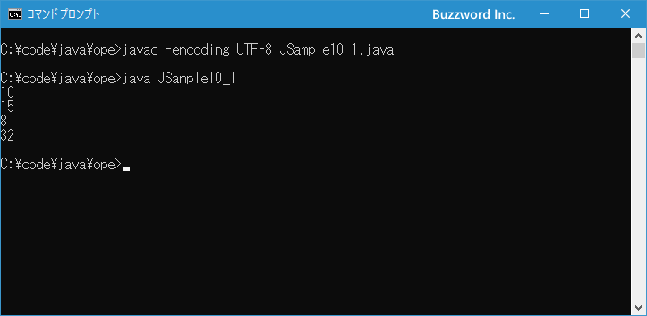
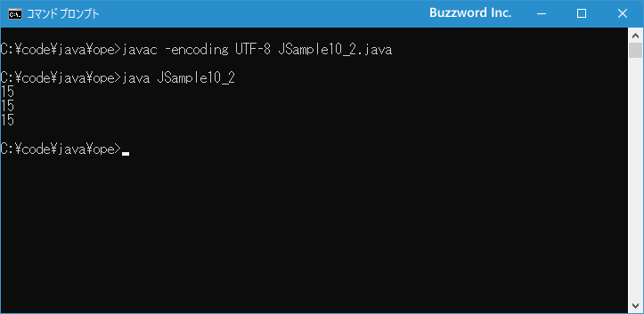

代入演算子
変数に対してリテラルや他の変数の値を格納するために使用する演算子が代入演算子です。右辺の値を左辺へ代入するためのものだけでなく、他の演算子と組み合わせた代入演算子も用意されています。ここでは代入演算子の使い方について解説します。
代入演算子の使い方
変数に対して値や他の変数を代入するときに使用するのが代入演算子です。
| 演算子 | 使用例 | 意味 |
|---|---|---|
| = | A = B | AにBを代入する |
次のサンプルをみてください。
int a, b; a = 10; b = a;
代入演算子を使って変数 a に 10 を代入しています。そして同じく代入演算子を使って変数 b に変数 a に格納されている値を代入しています。このように代入演算子の基本的な使い方は演算子の右辺の値を左辺の変数へ代入するときに使用します。
代入演算子は = の他に別の演算子と組み合わせた次のものが用意されています。
| 演算子 | 使用例 | 意味 |
|---|---|---|
| += | A += B | A = A + B と同じ |
| -= | A -= B | A = A - B と同じ |
| *= | A *= B | A = A * B と同じ |
| /= | A /= B | A = A / B と同じ |
| %= | A %= B | A = A % B と同じ |
| &= | A &= B | A = A & B と同じ |
| |= | A |= B | A = A | B と同じ |
| ^= | A ^= B | A = A ^ B と同じ |
| <<= | A <<= B | A = A << B と同じ |
| >>= | A >>= B | A = A >> B と同じ |
| >>>= | A >>>= B | A = A >>> B と同じ |
これらの演算子は左辺の変数と右辺の値を演算を行ったあとで、その結果をあらためて左辺の変数に代入するときに使用します。次のサンプルをみてください。
int num; num = 10; num = num + 8;
変数 num に 10 を代入したあと、変数に格納されている値に 8 を加算した結果を改めて変数 num に代入しています。結果的に変数 num には 18 が格納されています。
これを += 演算子を使用することで次のように記述することができます。
int num; num = 10; num += 8;
このように左辺の値になんらかの演算を行った上で改めて左辺の変数に代入しなおすという処理はよく使われるものなので、代入演算子と他の演算子を組み合わせた記述方法は覚えておかれてください。
それでは簡単なサンプルプログラムを作って試してみます。テキストエディタで次のように記述したあと、 JSample10-1.java という名前で保存します。
class JSample10_1{
public static void main(String[] args){
int num;
num = 10;
System.out.println(num);
num += 5;
System.out.println(num);
num = 8;
System.out.println(num);
num *= 4;
System.out.println(num);
}
}
コンパイルを行います。
javac -encoding UTF-8 JSample10_1.java
その後で、次のように実行してください。
java JSample10_1

代入演算子と他の演算子を組み合わせた演算を行いました。
多重代入
代入演算子を次のように使用することで、複数の変数に同じ値をまとめて代入することができます。
int a, b, c; a = b = c = 10;
一つの式の中で優先順位が同じ複数の演算子が使われていた場合、結合規則に従ってどの演算子から演算が行われるのかが決まります。代入演算子の = は結合規則が右結合ですので、先ほどのサンプルは次のように演算が行われます。
(1) c= 10 (2) b = c (3) a = b
結果として変数 a 、 b 、 c にはすべて 10 が代入されます。
それでは簡単なサンプルプログラムを作って試してみます。テキストエディタで次のように記述したあと、 JSample10-2.java という名前で保存します。
class JSample10_2{
public static void main(String[] args){
int a, b, c;
a = b = c = 15;
System.out.println(a);
System.out.println(b);
System.out.println(c);
}
}
コンパイルを行います。
javac -encoding UTF-8 JSample10_2.java
その後で、次のように実行してください。
java JSample10_2

3 つの変数に同じ値である 10 が格納されていることが確認できました。
-- --
代入演算子の使い方について解説しました。
( Written by Tatsuo Ikura )

著者 / TATSUO IKURA
初心者～中級者の方を対象としたプログラミング方法や開発環境の構築の解説を行うサイトの運営を行っています。